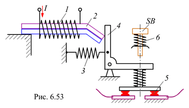

6.6.3.3. Тепловое реле
Для тепловой защиты электроустановок в пускателях устанавливают тепловые реле. Принцип действия простейшего теплового реле легко уяснить из рис. 6.53. Реле состоит из нагревательного элемента 1, который включается последовательно с нагрузкой. Внутри нагревательного элемента расположена биметаллическая пластина 2, состоящая из двух металлических пластин с различными коэффициентами линейного расширения. При токе, превышающем номинальный ток электродвигателя, нагревательный элемент настолько нагревает биметаллическую пластину, что она изгибается и её незакрепленный конец поднимается вверх. Под действием пружины 3 рычаг 4, лишившись опоры, поворачивается, в результате чего контакты 5, включенные в цепь катушки контактора, размыкаются. Для возврата реле в исходное положение используется кнопка SB. При нажатии на штифт кнопки SB контакты 5 замыкаются, а пружина 6 возвращает кнопку в исходное состояние.